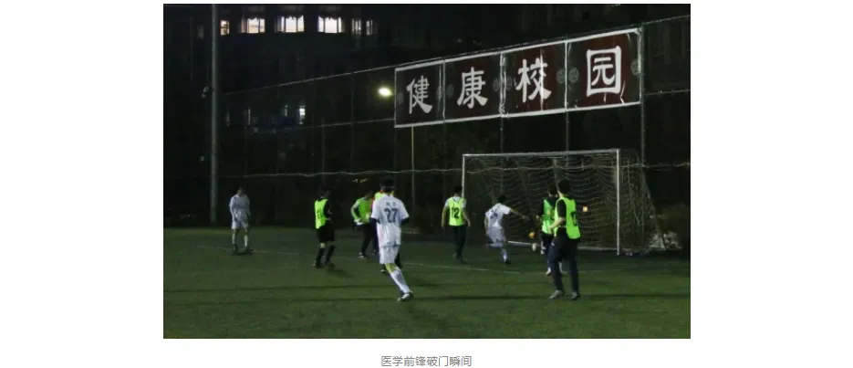
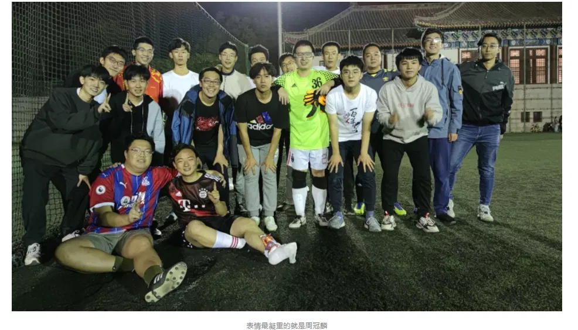

# 序
转载一些有趣的文章，侵删。
导读：2020 年，北大中文系男足和医学系男足比赛，公众号发布的战况报道火了。
# 1
2020 年 10 月 17 日晚 6 点，中文男足迎来了 2020 年新生杯的首秀。又一次凑齐 11 人首发的他们昂首阔步地走入球场，在 80 分钟内被医学连射 40 多脚，却只丢了 12 个球。本轮战罢，中文男足凭借积 0 分、净负 12 球的战绩，排名 20 支参赛球队的倒数第一。
赛前，中文男足的目标是让医学男足以 11:0 的比分击败自己，从而为中文系 110 周年系庆献礼。不曾想，医学众将把中文系的历史想得过于悠久，打进了 12 球。中文男足超额完成任务，提前为 120 周年系庆献礼。
中文与医学的渊源，可以追溯到民国时期。在 2018 年北大杯中文对阵医学的比赛前瞻中，老队长邓香兰对此进行了详尽的考据：

中文和医学历史上有三次交手。第一次是鲁迅弃医从文，并说出 “学医救不了中国人” 的旷世名言；第二次是余华弃医从文，写出《活着》《许三观卖血记》等优秀文学作品；第三次则是 2017 年北大杯，中文 0:5 败于医学。从历史交手来看，中文两胜一负略占上风。①
①出自邓香兰《比赛前瞻 | 中文 vs 医学》
那场比赛，中文男足在最后 15 分钟连丢 3 球，0:3 负于医学。因此，在本场比赛之前，中文与医学的历史交锋战绩是两胜两负，勉强打成平手。
然而，鲁迅先生早已去世，余华老师年过花甲，帮助中文男足把输球控制在个位数的金正洙、余栢耀、李述训、白升圭等人也刚刚退役。
队长程志鹏作为中文系学生会前任主席，深知 “世界潮流，浩浩荡荡，顺之者昌，逆之者亡” 的道理，明白中文男足已无力回天，便忙着找工作，把球队大小事务交付刚上大二的陈晔晗。
陈晔晗还没到为保研、找工作、买房焦虑的时候，斗志昂扬，立志要打造一支史上最强的中文男足。
# 2
一位长者曾经说过，一个人的命运，不仅，也要。陈晔晗的雄心壮志，在历史的进程面前，被击得粉碎。
众所周知，中文男足的兴衰，取决于球队中外国人的数量。外国人多，中文男足就能少输几个；外国人少，中文男足就连人都凑不齐。
在 2020 年的国际形势下，陈晔晗、王少坤等招新骨干被迫放弃了国际化路线，转而专注发展国内青训，希望培养出本土的优秀年轻人。经过不懈的坑蒙拐骗，中文男足终于招到了 9 名来自国内的新生，近十年来首次实现全华班。
来自黑龙江的丰瑞是最早加入球队的新生。他不仅有北大通知书，还有女朋友。而其他学长，不仅大概率拿不到北大研究生的通知书，还都没有女朋友。丰瑞决心要秀这群 loser 学长们一脸，准备把女朋友带到场边观战。然而，由于疫情原因，每场比赛只允许 5 名观众入场。
为此，丰瑞放出豪言：“帮我把我女朋友整进来，我就让你们看看什么叫 MVP。”
远在青海的邓香兰放下手里改到一半的历史试卷，在群里耐心地向丰瑞讲解了名宿胡老师、余栢耀、周冠麟带女朋友到场边看球，然后分手的故事。丰瑞大吃一惊，连忙以天气转凉为由，劝女朋友勿来观战。
来自内蒙古的新生郎大状热爱运动，本届新生杯，他同时参加了足球、篮球和排球。在足球比赛之前，他已用出色的表现帮助中文生物男篮联队和中文排球队输掉了比赛。
老将陈龙听说这件事之后，暗地里跟陈晔晗商议：“要不我们把郎大状摁在替补席上，这样或许能打平。” 陈晔晗点头称是。
正当二人商议妥当后，足协传来消息：新生董逸宸的报名信息有误，不得上场。因此要使场上还能留有 11 个人，郎大状必须出场。这意味着，中文男足此战必败。
陈晔晗在宿舍点起了一根烟，他的心，就像首都的秋夜一样微凉。
# 3
面对医学强大的攻击线，中文男足排出了 5-2-3 阵型。老将陈龙镇守大门；跑不太动的老博士金梦城带着没踢过球的新生齐家平、秦宇航、庞翔升和陈佳豪蜷缩在禁区内；陈晔晗和自带输球属性的郎大状组成双后腰，陈晔晗负责贴身防守郎大状，避免他打进乌龙；孙钰淇、丰瑞和董劲松则在前场乱跑，负责让医学看不出中文男足的战术。
场边的老生袁睿想起了赛前丰瑞的豪言，又看见旁边站着的女生，向丰瑞大喊：“MVP！别忘了！”
不曾想，丰瑞的女友真的因为天气寒冷未能到场，那位女生是医学的领队。丰瑞听到袁睿的话后，一头雾水，把球传给了医学前锋。医学球员一脚爆射，球飞入死角。中文 0:1 医学。此时，比赛刚刚过去了一分钟。

丢球后，前锋董劲松决心有所表现。他接到丰瑞的传球，想用人球分过突破医学防守队员，结果人过去了，球留在了医学队员的脚下。医学迅速反击，门将陈龙迎着医学前锋果断出击，将球稳稳抱在怀里。
场边的中文替补席发出雷鸣般的掌声。陈龙一手抱球，一边对替补席作出手势，示意这是基操。随后一个大脚踢呲，把球送到医学前锋脚下，医学前锋推射近角稳稳命中。中文 0:2 医学。
连失两球，中文男足新生们的脸色都不太好看，场上的陈晔晗安慰他们：“才两个球，问题不大。” 他因为说话，补防慢了一步，医学前场小范围配合打成。中文 0:3 医学。
陈晔晗嘴上说着没事，心态早已崩溃，没多久就崴了脚，下场休息。领队王少坤见陈晔晗伤势严重，连忙让袁睿自己把自己换上场，而他则和老生龚喆、王涵思去隔壁小卖部买冰棍给陈晔晗冰敷。
过了一会，他们三人一人叼着一根冰棍走进了球场，把剩下的一根递给了陈晔晗。陈晔晗翻了翻白眼：“怎么不多买两个，全敷了我吃什么？” 众人开始插科打诨，场边充满了快乐的气氛。
王少坤突然想起来场上还在比赛，一问比分，中文已经 0:6 落后了。这个比分也保持到了中场休息。
# 4
自 2016 年新生杯以来，中文男足从来没有在单场比赛中丢 10 球以上。如果按照这个趋势发展，全场比赛将丢掉 12 个球，成为近 5 年来最耻辱的比赛。
老将陈龙为大家打气：“2016 年新生杯，国关上半场也进了 6 个，下半场我们 7 打 11，只让他们进了 3 个，咱们 11 打 11，怕什么！” 大家听完陈龙的演讲，斗志昂扬，准备守住尊严，不被上双。
下半场刚开场，老生金梦城和袁睿由于斗志过于昂扬，一个抽筋一个拉伤，被张佳良和周冠麟换下。
王少坤及时在群里通报了这一信息。胡老师看见有人受伤，立刻开始说教：
缺少了两大后防主力的中文男足已经完全无力阻挡医学如潮水般的攻势，眼看着就要彻底崩溃了。这时，医学本着 “做人留一线，日后好相见” 的原则，换下了几位主力球员，让替补球员登场试炼。
然而，医学的替补球员也很强，越战越勇，连进 6 球，比分定格在 0:12。
赛后，陈龙统计了一下对面的射门次数，发现医学一共射门 40 余次，却只进了 12 球。在中文系学习理科的他算出了自己的扑救能力 —— 平均每 2.67 分钟可以扑出一球。因此，在此后的比赛中，只要保证对方每 2.67 分钟只射门一次，他就能力保球门不失。
袁睿由于伤势严重，躺上了救护车。大家纷纷在群里安慰他，只有胡老师乐观地表示：“躺在救护车上还能打字，说明手和脑子没坏。” 邓香兰也顺势调侃到：“说不定你去北医三院看病的时候，那个医生就是医学男足的，只不过因为今晚值班，所以没能来踢比赛。”
所幸，陈晔晗、袁睿、金梦城的伤势都不算严重。远在香港的余栢耀向伤员们发来了慰问，对新生们表示了鼓励和期望，新生们纷纷表示收获到了快乐，下次还来。

队员们兴高采烈地进行了合影，来纪念这场时间最早的百廿献礼。照片中只有周冠麟神色严峻，因为即使伤了这么多人，下场比赛，还是轮不到他首发。
不论如何，还是提前祝中文系 120 岁生日快乐罢